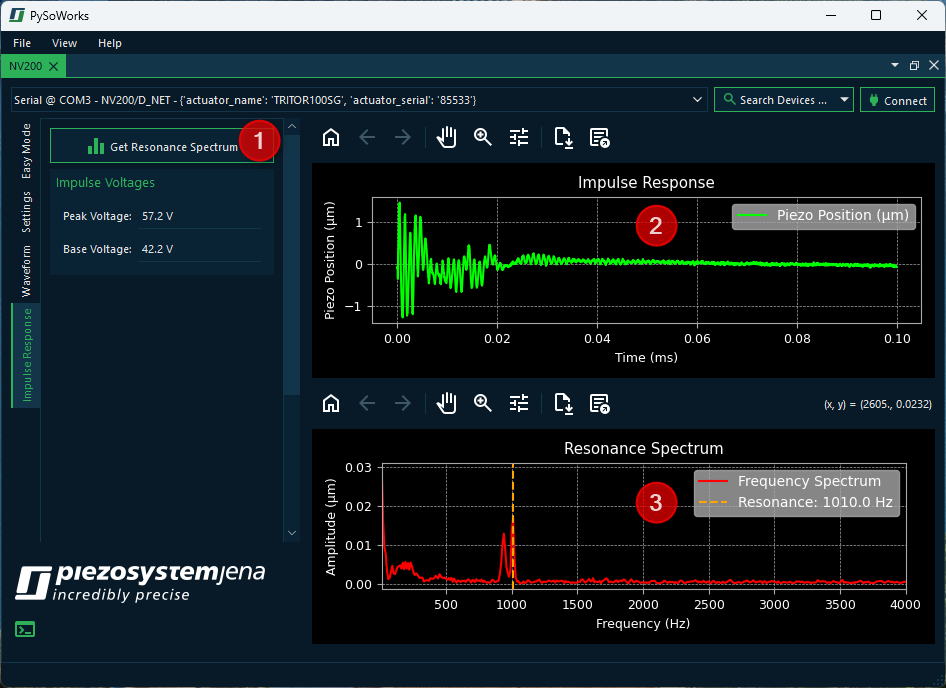

6. Impulse Response Measurement
The software allows you to perform impulse response measurement and response analysis for your piezo actuator. Just click the Impulse Response tab ❶ to show the panel for impulse response measurement.
Piezo actuators are highly responsive devices, but their precision can be limited by mechanical resonances. These resonances are frequencies at which the actuator or the connected system naturally vibrates, often resulting in undesired oscillations or overshoot. Understanding the impulse response and resonance frequency of your system is critical for optimizing performance and avoiding instability.
The notch filter in your piezo amplifier is specifically designed to address these issues by suppressing problematic resonant frequencies. To measure the impulse response and identify resonant frequencies, follow these steps:
Measure or obtain the impulse response of your actuator system by clicking the ❶ Get Resonance Spectrum button.
Identify peaks corresponding to resonant frequencies in the Resonance Spectrum plot ❸.
Set the notch filter’s center frequency (notchf) to the dominant resonance.
Adjust the bandwidth (notchb) to cover the resonance peak while minimizing attenuation of other frequencies.
Observe the improved impulse response and smoother system behavior.
Attention
The impulse response measurement will create a short impulse from a Base Voltage to a Peak Voltage to get the impulse response from the device. Ensure that the resulting motion or force cannot damage your application or surrounding equipment.
6.1. Impulse Response and Resonance Frequency
The impulse response tells you how fast the actuator reacts and how it settles after a sudden input. Knowing the impulse response allows you to predict the system’s behavior in feedback or feedforward control systems. It helps you to identify unwanted oscillations or overshoot that could affect precision.
The resonance frequency, on the other hand, is the frequency at which the actuator naturally oscillates. It is important to know this frequency to avoid driving the actuator at its resonance, which can lead to excessive vibrations and potential damage. By knowing the resonance frequency, you can design the driving signals to stay in the safe frequency range.
6.2. How the Notch Filter Helps
The notch filter works by attenuating a specific frequency range, defined by:
Center frequency
notchf- the frequency to be suppressed (typically the resonance frequency).Bandwidth
notchb- the range around the center frequency that is attenuated.
Benefits:
1. Suppress Resonant Peaks:
By reducing the amplitude of signals at the resonance frequency, the notch filter prevents excessive vibrations that appear in the impulse response.
2. Improve Control Stability:
Control algorithms that rely on the actuator’s response (e.g., PID or feedforward control) perform better when resonant oscillations are minimized.
3. Protect Mechanical Components:
Avoiding excitation of resonant modes reduces wear, noise, and the risk of mechanical damage.